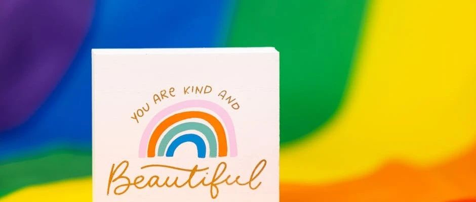

部门介绍 | 调研组&作者团&翻译组&设计组
原创
CW多棱镜
CW多棱镜
2024年09月20日 22:08
北京
从本周四到周六，我们将依次介绍CW的各个部门，推送的安排如下：
周四：社交智库、社群运营、魔柜
周五：调研组、作者团、翻译组、设计组
周六：议题组、意识工坊、电台
在这三篇推送中，我们将详细介绍每个部门的职能定位，以及未来一年的规划。我们将在周日发布正式招募的推送，如果您有意愿报名参与到组织活动中，请留意推送并填写其中的报名问卷。期待您的加入。同时，也欢迎性/别友善的朋友以社群参与者的身份参加各类活动，近期我们已经发布了翻译组、意识工坊、议题组等部门的招募活动，敬请期待后续更多活动，欢迎您的加入。
以下是本期的部门介绍：
调研组
我们是调研组，采用线上线下研究相结合、定性与定量并重的方式进行研究，欢迎所有对性别相关议题充满好奇心、有一定学术能力的朋友加⼊这个新团队～
在这⾥，你将结识各地的社群伙伴，与志同道合的朋友们一起开启研究项目，收集数据， 探求现实；新年度，我们尝试探索开办学术论坛的可行性，为性/别相关的研究者提供一个展示、交流学术的平台。
我们希望你对性别相关的议题保持敏感，提出新颖有趣的选题，并鼓励你通过以下⽅式，⾃由选择，发挥你所擅⻓的能力，为项⽬作贡献。
可以采用的方式包括但不限于：
•
根据选题定位⽬标群体，设计并收集问卷
• 使⽤数据分析⼯具，进⾏数据分析
• 进⾏深度访谈，对访谈内容归类
• 根据获得的数据，撰写调查报告
同时，希望你拥有负责的做事态度，并能够在确认参与具体项目之前保证能够投入的最小时间，保证项⽬开启后的进展，对团队、社群和自己负责；
更希望你乐于沟通，有合作精神，与项⽬伙伴们愉快和谐地完成共同⽬标。
注：这是⼀个全新的小组，与以往的学术组完全独立，学术组今年暂时不需招新，之后择机再与大家相见。
作者团
这里是全新的CW社群写作组！定期为CW定期提供原创内容。我们希望用文字来表达自我，展现多样，传达情绪，治愈他人，提升自信。我们更希望通过写作来促进性/别平等，促进大众对多元群体的认识和包容度。
我们产出的具体作品包括但不限于
：
（1）时事评论：抓取生活中的热点现象或话题，或者从对一个概念或问题的讨论入手，深入研究并撰写具有思辨性的文章。
（2）纪实文学：根据值得分享的真实经历或基于真实经历的虚构，写作有社群群体记忆的故事。
（3）虚构文学：创作一些虚构的，有趣的甚至是抽象的小故事，不一定需要输出你的个人观点或者体现价值立场。
（4）书报影音评论：从性/别角度对任意书报影音进行分析，多角度撰写评论性文字。
（5）特稿：通过团队协作，选择特定主题，用较长时间了解和采访特定群体或对象，并写作具有深度的非虚构作品。
（6）接收投稿：我们希望更多地倾听来自社群内部的声音，无论你的身份认同是什么，无论你生活在哪，只要你有想让大家看到的文字，都欢迎你写出，并发送到邮箱lijirongjido@gmail.com。我们会审核编辑之后发出。
我们希望你：
-对LGBTQ+议题有基本了解，并愿意继续探索学习。
-对语言文字有一定的敏感，愿意用文字表达一些思考与感悟。
-有责任心、愿意沟通协作，积极至少一月一次的选题会以及配合编辑改稿。
-我们不要求任何工作经验，但请提交一份写作样例：可以是随笔、课程作业、论文、小说、诗歌、新闻报道、虚构作品等任何形式，请以昵称+稿件类型提交至lijirongjido@gmail.com
翻译组
这里是龙藏虎卧、视野开阔的翻译组，有来自世界各地的小伙伴。翻译组的主要职责，就是作为广袤互联网平台的探索者和分享者，将优质前沿内容普及给更多的读者。本学期翻译组将举办工作坊活动，翻译《Queer TV China》一书，目前相关招募工作已经完成。此外，翻译组的主要活动是选题会和译校工作。这里有前沿的学术论文和严谨的科普，也有动人心弦的故事和新鲜出炉的报道，甚至可以安利自己喜欢的电影、剧集、音乐、艺术作品……我们仍在探索不同的可能性。如果你关注国际上的性与性别议题，如果你也想通过翻译帮助更多人了解最新动态，欢迎你加入我们！
我们希望你：
- 关注性与性别议题，思想开放，乐于探索不同议题；
- 对国际上的热点信息较为敏锐，有自己的见解和观察；
- 希望具有一定翻译和书面表达能力，语种不限。
设计组
我们是CW设计组，前身是编辑组，负责CW公众号和其他平台的宣传设计工作，让社群及活动呈现出更精彩的视觉效果和更丰富的感官体验。
我们的工作内容包括：
★责任编辑：对文章措辞和内容细节进行纠错和润色；与作者对接，跟进作者的进度，帮助作者按时交稿。
☆希望你：细致耐心，语言文字敏感度高，熟悉LGBTQ+文化；保证工作时间充裕，能及时完成催稿、审校工作；有相关经验者优先。
★美术编辑；对已有文案进行排版，制作微信公众号推送；根据文案内容和美观需求酌情寻找配图。
☆希望你：会熟练使用秀米工具进行排版；保证工作时间充裕，按时完成任务，不拖延；有相关经验或作品者优先。
★插画师：为CW活动及部分文章（特别是主题活动）创作插画、海报等。
☆希望你：
有绘画或PS基础，热爱美术创作；时间充裕，灵感丰富，每月供稿1次；有相关经验或作品者优先。
其它平台的运营也欢迎提议哦！